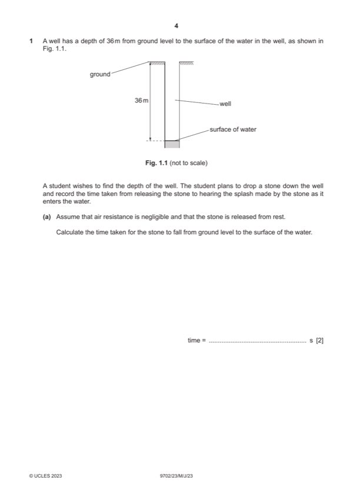

Question 1

Original paper page 4
Part 1(a) — solution
- [A1] Obtain/use: = 2.7 s
Mark points
- [A1] Obtain/use: = 2.7 s
Part 1(b) — solution
- reaction time between hearing the splash and stopping the stop-watch B3
- the sound (of the splash) takes time to reach the student or the stone hits the water at a different time to the sound
- the student might not let go of the stone from ground level
- the student might not let go of the stone and start the stop-watch at the same time
- stop-watch may not be properly calibrated / has a zero error
- (local value of) g is not (exactly) 9.81 (m s2)
- stone given initial velocity / initial velocity not zero
- stone does not fall (exactly) vertically / in a straight line
Mark points
- reaction time between hearing the splash and stopping the stop-watch B3
- the sound (of the splash) takes time to reach the student or the stone hits the water at a different time to the sound
- the student might not let go of the stone from ground level
- the student might not let go of the stone and start the stop-watch at the same time
- stop-watch may not be properly calibrated / has a zero error
- (local value of) g is not (exactly) 9.81 (m s2)
- stone given initial velocity / initial velocity not zero
- stone does not fall (exactly) vertically / in a straight line
Part 1(c) — solution
- [B1] Obtain/use: precise: results are close together / have little scatter
- [B1] Obtain/use: not accurate: the values are not close to / 50% different / (very) different from the true value
Mark points
- [B1] Obtain/use: precise: results are close together / have little scatter
- [B1] Obtain/use: not accurate: the values are not close to / 50% different / (very) different from the true value